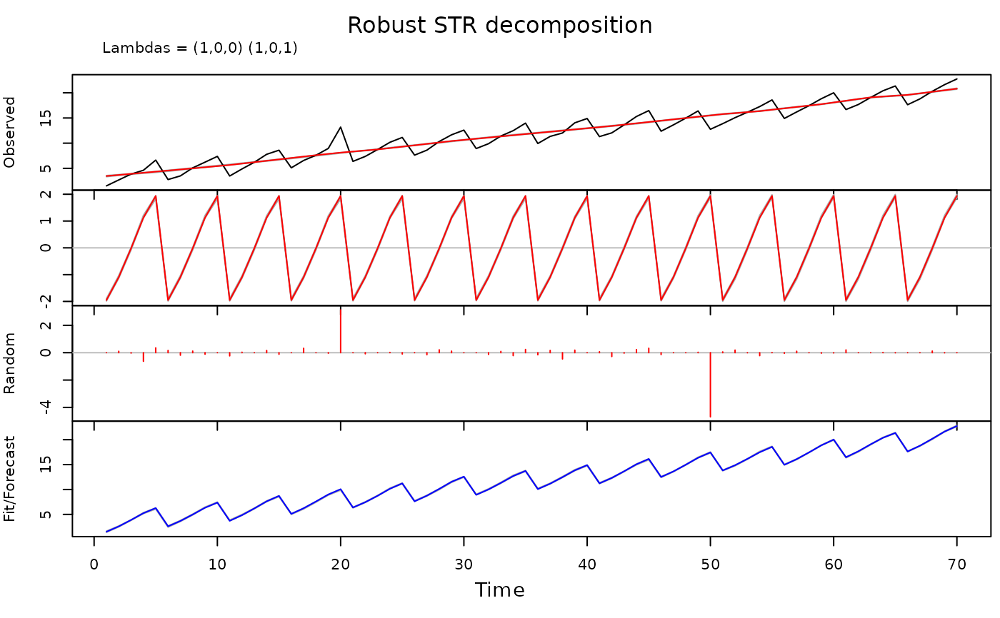

Robust Seasonal-Trend decomposition of time series data using Regression (robust version of STRmodel).
Usage
RSTRmodel(
data,
predictors = NULL,
strDesign = NULL,
lambdas = NULL,
confidence = NULL,
nMCIter = 100,
control = list(nnzlmax = 1e+06, nsubmax = 3e+05, tmpmax = 50000),
reportDimensionsOnly = FALSE,
trace = FALSE
)Arguments
- data
Time series or a vector of length L.
- predictors
List of predictors.
According to the paradigm of this implementation, the trend, the seasonal components, the flexible predictors and the seasonal predictors are all presented in the same form (as predictors) and must be described in this list.
Every predictor is a list of the following structures:data – vector of length L (length of input data, see above). For trend or for a seasonal component it is a vector of ones. For a flexible or a seasonal predictor it is a vector of the predictor's data.
times – vector of length L of times of observations.
seasons – vector of length L. It is a vector of ones for a trend or a flexible predictor. It is vector assigning seasons to every observation (for a seasonal component or a seasonal predictor). Seasons can be fractional for observations in between seasons.
timeKnots – vector of times (time knots) where knots are positioned (for a seasonal component or a seasonal predictor a few knots have the same time; every knot is represented by time and season). Usually this vector coincides with times vector described above, or timeKnots is a subset of times vector.
seasonalStructure – describes seasonal topology (which can have complex structure) and seasonal knots.The seasonal topology is described by a list of segments and seasonal knots, which are positioned inside the segments, on borders of the segments or, when they are on on borders, they can connect two or more segments.
seasonalStructure is a list of two elements:segments – a list of vectors representing segments. Each vector must contain two ordered real values which represent left and right borders of a segment. Segments should not intersect (inside same predictor).
sKnots – a list of real values (vectors of length one) or vectors of lengths two or greater (seasonal knots) defining seasons of the knots (every knot is represented by time and season). All real values must belong (be inside or on border of) segments listed in segments. If a few values represent a single seasonal knot then all these values must be on borders of some segments (or a single segment). In this case they represent a seasonal knot which connects a few segments (or both sides of one segment).
lambdas – a vector with three values representing lambda (smoothing) parameters (time-time, season-season, time-season flexibility parameters) for this predictor.
- strDesign
An optional parameter used to create the design matrix. It is used internally in the library to improve performance when the design matrix does not require full recalculation.
- lambdas
An optional parameter. A structure which replaces lambda parameters provided with predictors. It is used as either a starting point for the optimisation of parameters or as the exact model parameters.
- confidence
A vector of percentiles giving the coverage of confidence intervals. It must be greater than 0 and less than 1. If
NULL, no confidence intervals are produced.- nMCIter
Number of Monte Carlo iterations used to estimate confidence intervals for Robust STR decomposition.
- control
Passed directly to
rq.fit.sfn()during Robust STR decomposition.- reportDimensionsOnly
A boolean parameter. When TRUE the method constructs the design matrix and reports its dimensions without proceeding further. It is mostly used for debugging.
- trace
When
TRUE, tracing is turned on.
Value
A structure containing input and output data.
It is an S3 class STR, which is a list with the following components:
output – contains decomposed data. It is a list of three components:
predictors – a list of components where each component corresponds to the input predictor. Every such component is a list containing the following:
data – fit/forecast for the corresponding predictor (trend, seasonal component, flexible or seasonal predictor).
beta – beta coefficients of the fit of the coresponding predictor.
lower – optional (if requested) matrix of lower bounds of confidence intervals.
upper – optional (if requested) matrix of upper bounds of confidence intervals.
random – a list with one component data, which contains residuals of the model fit.
forecast – a list with two components:
data – fit/forecast for the model.
beta – beta coefficients of the fit.
lower – optional (if requested) matrix of lower bounds of confidence intervals.
upper – optional (if requested) matrix of upper bounds of confidence intervals.
input – input parameters and lambdas used for final calculations.
data – input data.
predictors - input predictors.
lambdas – smoothing parameters used for final calculations (same as input lambdas for STR method).
method – always contains string
"RSTRmodel"for this function.
References
Dokumentov, A., and Hyndman, R.J. (2022) STR: Seasonal-Trend decomposition using Regression INFORMS Journal on Data Science, 1(1), 50-62. https://robjhyndman.com/publications/str/
Examples
# \donttest{
n <- 70
trendSeasonalStructure <- list(segments = list(c(0, 1)), sKnots = list(c(1, 0)))
ns <- 5
seasonalStructure <- list(
segments = list(c(0, ns)),
sKnots = c(as.list(1:(ns - 1)), list(c(ns, 0)))
)
seasons <- (0:(n - 1)) %% ns + 1
trendSeasons <- rep(1, length(seasons))
times <- seq_along(seasons)
data <- seasons + times / 4
set.seed(1234567890)
data <- data + rnorm(length(data), 0, 0.2)
data[20] <- data[20] + 3
data[50] <- data[50] - 5
plot(times, data, type = "l")
timeKnots <- times
trendData <- rep(1, n)
seasonData <- rep(1, n)
trend <- list(
data = trendData, times = times, seasons = trendSeasons,
timeKnots = timeKnots, seasonalStructure = trendSeasonalStructure, lambdas = c(1, 0, 0)
)
season <- list(
data = seasonData, times = times, seasons = seasons,
timeKnots = timeKnots, seasonalStructure = seasonalStructure, lambdas = c(1, 0, 1)
)
predictors <- list(trend, season)
rstr <- RSTRmodel(data, predictors, confidence = 0.8)
#> 'as(<dgCMatrix>, "dgTMatrix")' is deprecated.
#> Use 'as(., "TsparseMatrix")' instead.
#> See help("Deprecated") and help("Matrix-deprecated").
plot(rstr)

# }